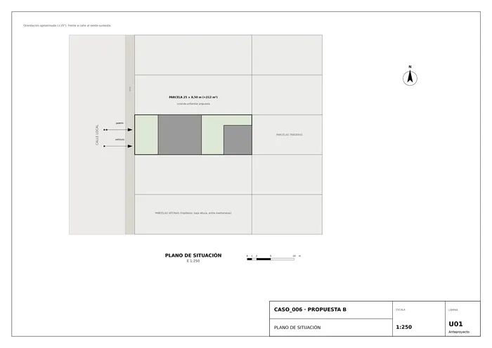
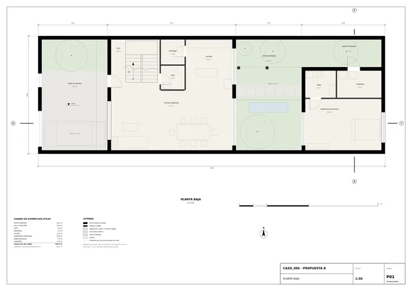
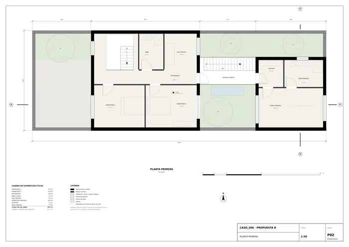
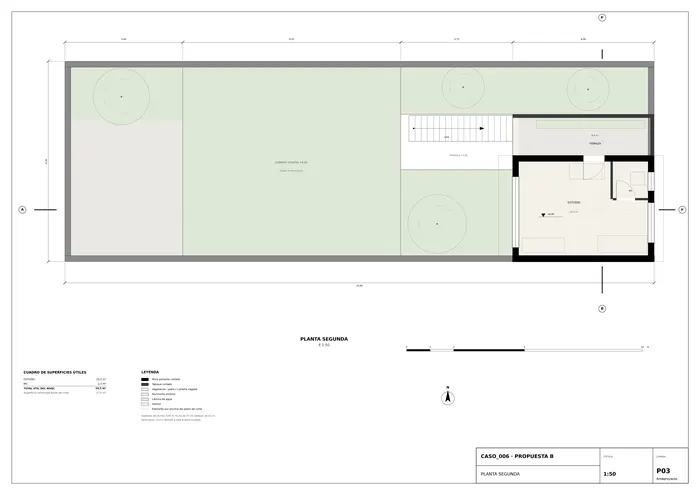
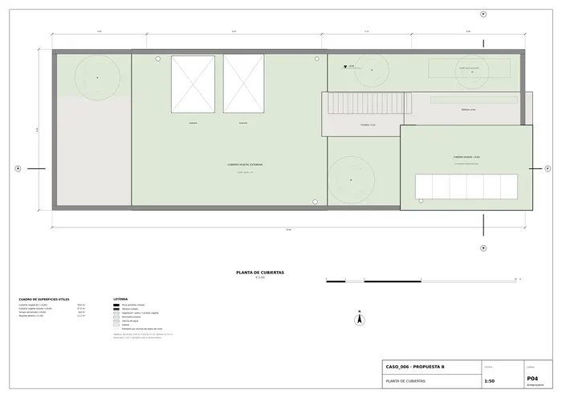
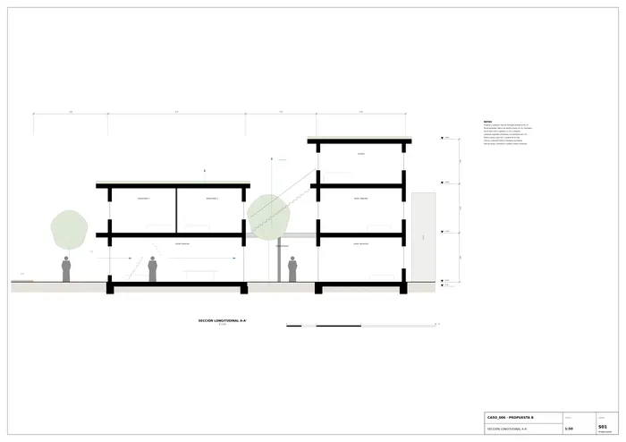
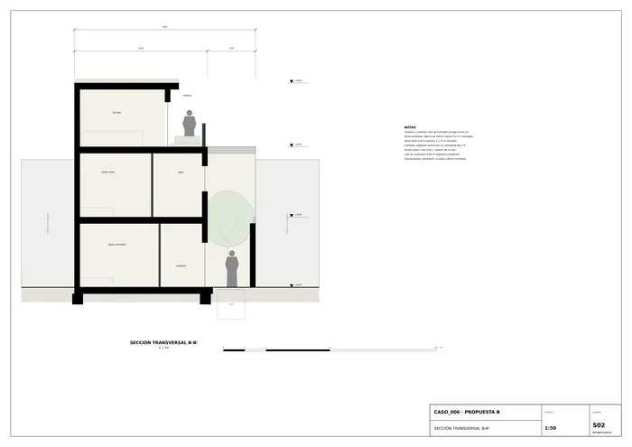
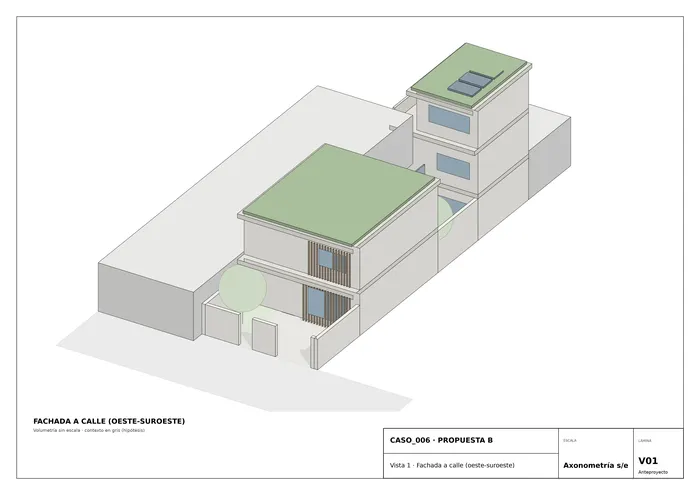
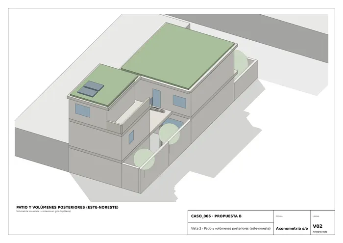

Caso 006 · AHL architects (Nguyen Manh Hung) · 2019 · vivienda unifamiliar
Una vivienda introvertida en un solar de 25 × 8,50 m (≈ 212 m²) entre medianeras se resuelve como una secuencia de planos habitables desplazados y de distinta altura, unidos por escaleras y una pasarela abierta. La casa se fragmenta en tres volúmenes (pabellón de día y dormitorios, volumen posterior y estudio) que dejan entre sí un patio vegetado. Las cubiertas son jardín: lo que se ve desde dentro y desde los vecinos es vegetación. El patio interior ocupa el lugar de la fachada: las estancias se abren a él y se cierran a las medianeras.
El boceto muestra cuatro planos alargados, de distintas alturas y desplazados, con dos tramos de escalera y trazo verde. Se interpreta así:
Los planos del boceto se convierten en forjados volados (0,80 m al oeste) y los tramos de escalera en una escalera interior en U y otra exterior, recta, sobre el patio. El prisma de contorno es la parcela entre medianeras.
Dormitorios con ventanas solo a los frentes cortos (calle o patio): privacidad total respecto a las medianeras.
| Nivel | Útil (m²) | Construida bruta (m²) |
|---|---|---|
| Planta baja | 100,5 | 116,1 |
| Planta primera | 89,2 | 127,3 |
| Planta segunda | 24,5 | 27,0 |
| Total | 214,2 | 270,4 |
Exteriores: patio de acceso 38,0 m², patio interior 38,0 m², jardín posterior 11,5 m², terraza del estudio 8,8 m². Cumple el rango orientativo (270 m² dentro de 250–420 m²). Programa: 1 vivienda, 4 dormitorios (3 + invitados), 4 baños/aseos, estar-comedor-cocina, sala familiar, estudio y espacios exteriores vegetados. Hipótesis normativas (no constan en el encargo): altura máxima 9,60 m, ocupación del 100 % del frente de las medianeras en los volúmenes y patios interiores de 4,75 m mínimo.

U01 · Plano de situación
P01 · Planta baja
P02 · Planta primera
P03 · Planta segunda
P04 · Planta de cubiertas
S01 · Sección longitudinal A-A'
S02 · Sección transversal B-B'
V01 · Vista 1 · Fachada a calle (oeste-suroeste)
V02 · Vista 2 · Patio y volúmenes posteriores (este-noreste)Memoria de la propuesta tal como la entregó el sistema. Se han omitido las notas internas del proceso (revisiones, control de reconocimiento y referencias a archivos de trabajo).